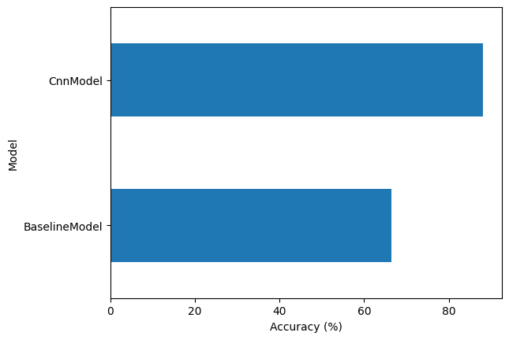
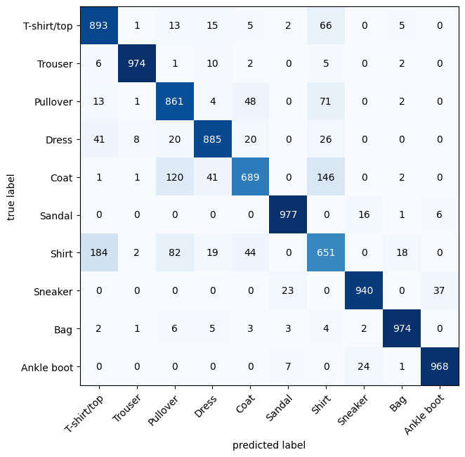

In this project, we will build neural network models to classify the type of clothing in images from the FashionMNIST dataset.
We will start by building a simple neural network model that will serve as a baseline for comparison with a more complex model, such as a Convolutional Neural Network (CNN) model.
Code
# Import necessary libraries
import torch
from torch import nn
import torchvision
from torchvision import datasets, transforms
from torch.utils.data import DataLoader
import matplotlib.pyplot as plt
from tqdm.auto import tqdm
from timeit import default_timer as timer
import pandas as pd
from torchmetrics import ConfusionMatrix
from mlxtend.plotting import plot_confusion_matrix
Prepare and explore the data
We will use FashionMNIST dataset to train our image classification models. It contains grayscale images of 10 different kinds of clothing, where each image is 28x28 pixels and is associated with a label indicating the fashion category it belongs to. Each pixel is represented by an 8-bit integer (0-255), where 0 represents black and 255 represents white.The training set consists of 60,000 images and testing set consists of 10,000 images. The dataset is available as a built-in dataset in PyTorch, so we load it using torchvision.datasets.
Code
# Set device-agnostic code
device = torch.device("cuda" if torch.cuda.is_available() else "cpu")
# Load datasets
train_data = datasets.FashionMNIST(root="data", train=True, download=True, transform=transforms.ToTensor())
test_data = datasets.FashionMNIST(root="data", train=False, download=True, transform=transforms.ToTensor())
Downloading http://fashion-mnist.s3-website.eu-central-1.amazonaws.com/train-images-idx3-ubyte.gz
Downloading http://fashion-mnist.s3-website.eu-central-1.amazonaws.com/train-images-idx3-ubyte.gz to data/FashionMNIST/raw/train-images-idx3-ubyte.gz
100%|██████████| 26421880/26421880 [00:01<00:00, 19028480.89it/s]
Extracting data/FashionMNIST/raw/train-images-idx3-ubyte.gz to data/FashionMNIST/raw
Downloading http://fashion-mnist.s3-website.eu-central-1.amazonaws.com/train-labels-idx1-ubyte.gz
Downloading http://fashion-mnist.s3-website.eu-central-1.amazonaws.com/train-labels-idx1-ubyte.gz to data/FashionMNIST/raw/train-labels-idx1-ubyte.gz
100%|██████████| 29515/29515 [00:00<00:00, 304933.03it/s]
Extracting data/FashionMNIST/raw/train-labels-idx1-ubyte.gz to data/FashionMNIST/raw
Downloading http://fashion-mnist.s3-website.eu-central-1.amazonaws.com/t10k-images-idx3-ubyte.gz
Downloading http://fashion-mnist.s3-website.eu-central-1.amazonaws.com/t10k-images-idx3-ubyte.gz to data/FashionMNIST/raw/t10k-images-idx3-ubyte.gz
100%|██████████| 4422102/4422102 [00:00<00:00, 5399740.87it/s]
Extracting data/FashionMNIST/raw/t10k-images-idx3-ubyte.gz to data/FashionMNIST/raw
Downloading http://fashion-mnist.s3-website.eu-central-1.amazonaws.com/t10k-labels-idx1-ubyte.gz
Downloading http://fashion-mnist.s3-website.eu-central-1.amazonaws.com/t10k-labels-idx1-ubyte.gz to data/FashionMNIST/raw/t10k-labels-idx1-ubyte.gz
100%|██████████| 5148/5148 [00:00<00:00, 21357346.18it/s]
Extracting data/FashionMNIST/raw/t10k-labels-idx1-ubyte.gz to data/FashionMNIST/raw
Let’s explore the dataset.
Code
# Print dataset details
print(f"Number of training samples: {len(train_data)}")
print(f"Number of testing samples: {len(test_data)}", end = '\n\n')
print(f'Classes in the dataset: {train_data.class_to_idx}', end = '\n\n')
# Check the shape of our image
image, label = train_data[0]
print(f"The shape of a sample image: {image.shape}", end = '\n\n')
Number of training samples: 60000
Number of testing samples: 10000
Classes in the dataset: {'T-shirt/top': 0, 'Trouser': 1, 'Pullover': 2, 'Dress': 3, 'Coat': 4, 'Sandal': 5, 'Shirt': 6, 'Sneaker': 7, 'Bag': 8, 'Ankle boot': 9}
The shape of a sample image: torch.Size([1, 28, 28])
We can see that our image tensor [1, 28, 28] is in the order CHW (Channels, Height, Width). The channel ‘1’ indicates that it is a grayscale image, and the 28 x 28 pixels of the image are represented by the height (H) and width (W).
Now, we will visualize some random images in the dataset.
Code
# Visualize some random images
torch.manual_seed(42)
fig, axes = plt.subplots(4, 4, figsize=(9, 9))
for ax in axes.flatten():
random_idx = torch.randint(0, len(train_data), size=[1]).item()
img, label = train_data[random_idx]
ax.imshow(img.squeeze(), cmap="gray")
ax.set_title(train_data.classes[label])
ax.axis('off')
plt.show()

Prepare DataLoader
Currently, our data is in the form of PyTorch Datasets. We will convert it into a DataLoader, which provides a way to efficiently load and preprocess data, manage batching, and shuffle the data. This ensures that our model training and evaluation processes are optimized. To achieve this, we use torch.utils.data.DataLoader.
Code
# DataLoader setup
BATCH_SIZE = 32
train_dataloader = DataLoader(train_data, batch_size=BATCH_SIZE, shuffle=True)
test_dataloader = DataLoader(test_data, batch_size=BATCH_SIZE, shuffle=False)
# View number of batches and batch size
print(f"Length of train dataloader: {len(train_dataloader)} batches of {BATCH_SIZE} batch size")
print(f"Length of test dataloader: {len(test_dataloader)} batches of {BATCH_SIZE} batch size", end = '\n\n')
# Check out what's inside the training dataloader
train_features_batch, train_labels_batch = next(iter(train_dataloader)) # features = images
print(f"The shape of a sample training batch of images: {train_features_batch.shape}")
print(f"The shape of a sample training batch of labels: {train_labels_batch.shape}", end = '\n\n')
Length of train dataloader: 1875 batches of 32 batch size
Length of test dataloader: 313 batches of 32 batch size
The shape of a sample training batch of images: torch.Size([32, 1, 28, 28])
The shape of a sample training batch of labels: torch.Size([32])
We set the batch size to 32. Now, the shape of the image tensors changes to [32, 1, 28, 28], where the first dimension represents the batch size. Using batches not only makes computation more efficient but also allows our model to update its parameters more frequently, as gradient descent is performed more often per epoch (once per mini-batch) rather than once per epoch.
Define train, test and evaluate functions
We will now define functions to train, test, and evaluate the model.
train_step() Function: This function defines the operations that occur during a single training step. These operations include feeding a batch of data through the model, calculating the loss, computing gradients, and updating the model’s parameters using an optimizer. The function then returns the average loss and accuracy across the training data.
test_step() Function: This function evaluates a trained model on the test dataset. It performs similar operations to those in the training step but without updating the model’s parameters. It returns the average loss and accuracy across the entire test dataset.
train_and_evaluate() Function: This function trains a given model over a specified number of epochs and evaluates its performance on the test dataset at the end of each epoch. It provides a complete training loop, including timing the training process and printing key metrics like loss and accuracy. Progress is tracked using TQDM.
eval_model() Function: This function evaluates a trained model on the test dataset using the given loss function and accuracy metric. It returns a dictionary containing the model’s name, loss, and accuracy.
Code
# Training function
def train_step(model, dataloader, loss_fn, optimizer, accuracy_fn, device=device):
model.to(device)
model.train()
train_loss, train_acc = 0, 0
for X, y in dataloader:
X, y = X.to(device), y.to(device)
y_pred = model(X)
loss = loss_fn(y_pred, y)
optimizer.zero_grad()
loss.backward()
optimizer.step()
train_loss += loss.item()
train_acc += accuracy_fn(y, y_pred.argmax(dim=1))
return train_loss / len(dataloader), train_acc / len(dataloader)
# Testing function
def test_step(model, dataloader, loss_fn, accuracy_fn, device=device):
model.to(device)
model.eval()
test_loss, test_acc = 0, 0
with torch.inference_mode():
for X, y in dataloader:
X, y = X.to(device), y.to(device)
y_pred = model(X)
loss = loss_fn(y_pred, y)
test_loss += loss.item()
test_acc += accuracy_fn(y, y_pred.argmax(dim=1))
return test_loss / len(dataloader), test_acc / len(dataloader)
# Train and evaluate models
def train_and_evaluate(model, loss_fn, optimizer, epochs=3):
train_start_time = timer()
for epoch in tqdm(range(epochs)):
print(f"Epoch: {epoch}\n{'-' * 10}")
train_loss, train_acc = train_step(model, train_dataloader, loss_fn, optimizer, accuracy_fn, device)
print(f"Train loss: {train_loss:.5f} | Train accuracy: {train_acc:.2f}%")
test_loss, test_acc = test_step(model, test_dataloader, loss_fn, accuracy_fn, device)
print(f"Test loss: {test_loss:.5f} | Test accuracy: {test_acc:.2f}%\n")
train_end_time = timer()
total_train_time = print_train_time(train_start_time, train_end_time, device)
return total_train_time
# Evaluate model performance
def eval_model(model, dataloader, loss_fn, accuracy_fn, device=device):
results = {"model_name": model.__class__.__name__}
results["model_loss"], results["model_acc"] = test_step(model, dataloader, loss_fn, accuracy_fn, device)
return results
Define print_train_time() and accuracy_fn
We will define a utility function print_train_time() that calculates the time taken for training, given the start and end times of the training process.
We will also define an accuracy evaluation metric using accuracy_fn(), which measures the proportion of correctly classified samples out of the total number of samples.
Code
# Utility function to print training time
def print_train_time(start: float, end: float, device: torch.device = None) -> float:
total_time = end - start
print(f"Train time on {device}: {total_time:.3f} seconds")
return total_time
# Accuracy calculation function
def accuracy_fn(y_true, y_pred) -> float:
correct = torch.eq(y_true, y_pred).sum().item()
return (correct / len(y_pred)) * 100
Baseline model
We will build our first simple fully connected neural network model as a baseline.
The architecture of the model consists of:
The Flatten Layer: Converts the 28x28 input image into a 784-element vector.
First Linear Layer: Maps the 784 input features to a specified number of hidden units.
ReLU Activation: Adds non-linearity after the first linear transformation.
Second Linear Layer: Maps the hidden units to the number of output classes.
ReLU Activation: Adds non-linearity after the second linear transformation.
Code
class BaselineModel(nn.Module):
def __init__(self, input_shape: int, hidden_units: int, output_shape: int):
super().__init__()
self.layer_stack = nn.Sequential(
nn.Flatten(), # flatten inputs into single vector
nn.Linear(in_features=input_shape, out_features=hidden_units),
nn.ReLU(),
nn.Linear(in_features=hidden_units, out_features=output_shape),
nn.ReLU()
)
def forward(self, x: torch.Tensor):
return self.layer_stack(x)
As we are dealing with multi-class classification problem, we’ll use the nn.CrossEntropyLoss() function as our loss function. For the optimizer, we will use torch.optim.SGD() to optimize the model parameters with a learning rate of 0.1.
Code
# Instantiate the model
torch.manual_seed(42)
model_1 = BaselineModel(input_shape=784, hidden_units=10, output_shape=len(train_data.classes))
# Setup Loss function and optimizer
loss_fn = nn.CrossEntropyLoss()
optimizer_1 = torch.optim.SGD(model_1.parameters(), lr=0.1)
Let’s train and evaluate our baseline model.
Code
total_train_time_model_1 = train_and_evaluate(model_1, loss_fn, optimizer_1)
0%| | 0/3 [00:00<?, ?it/s]
Epoch: 0
----------
Train loss: 1.05878 | Train accuracy: 62.19%
Test loss: 0.99506 | Test accuracy: 64.13%
Epoch: 1
----------
Train loss: 0.91331 | Train accuracy: 66.40%
Test loss: 0.90508 | Test accuracy: 66.86%
Epoch: 2
----------
Train loss: 0.87982 | Train accuracy: 67.24%
Test loss: 0.89476 | Test accuracy: 66.46%
Train time on cuda: 48.632 seconds
Code
model_1_results = eval_model(model_1, test_dataloader, loss_fn, accuracy_fn, device)
print(model_1_results)
{'model_name': 'BaselineModel', 'model_loss': 0.8947638508420401, 'model_acc': 66.46365814696486}
CNN model
We will now build a CNN model based on the TinyVGG architecture used on the CNN explainer website. The architecture of this model consists of two convolutional blocks, each with two convolutional layers, ReLU activations, and max pooling, followed by a fully connected classifier layer that outputs class probabilities.
Now, let’s go through the layers present in this architecture:
This layer is used to define and stack layers one after the other. It contains block_1, block_2, and classifier in nn.Sequential containers, each containing multiple layers.
- Convolutional Layers (nn.Conv2d)
These layers apply convolutional filters (kernels) to the input data, detecting features like edges, textures, and more complex patterns as we go deeper into the network. Each block starts with a convolutional layer to extract features from the input data.
Parameters:
in_channels: Number of input channels (1 for grayscale images).
out_channels: Number of filters (also known as kernels), which determines the number of output channels. This is set to hidden_units.
kernel_size: Size of the convolutional filter (3x3 in this case).
padding: Adds padding to the input image to maintain the spatial dimensions after convolution (padding of 1 keeps the output size the same as the input size).
- Activation Function (nn.ReLU)
ReLU (Rectified Linear Unit) is used as a non-linear activation function that introduces non-linearity into the model, allowing it to learn complex patterns. It is applied after each convolutional layer.
- Max Pooling Layer (nn.MaxPool2d)
Max pooling is a downsampling operation that reduces the spatial dimensions (width and height) of the feature maps while retaining the most important features (i.e., the maximum value in each pooling window). Each block ends with a max pooling layer to reduce the feature maps’ size and the computational complexity in the following layers.
Parameters:
kernel_size=2: Specifies a 2x2 window for pooling, which reduces each dimension by a factor of 2.
- Fully Connected Layer (nn.Linear)
A fully connected (dense) layer connects each input neuron to each output neuron. It’s typically used at the end of CNNs to aggregate the features extracted by the convolutional layers and make the final classification.
Parameters:
in_features: The number of input features, calculated as hidden_units * 7 * 7 because the feature maps have been reduced to 7x7 in size by the pooling layers.
out_features: The number of output neurons, which equals the number of classes in the dataset.
- Flatten Layer (nn.Flatten)
The flatten layer reshapes the multidimensional tensor output of the convolutional blocks into a 1D tensor (a vector) that can be fed into the fully connected layer. It is applied before the fully connected layer to prepare the data for classification.
Code
class CnnModel(nn.Module):
def __init__(self, input_shape: int, hidden_units: int, output_shape: int):
super().__init__()
self.block_1 = nn.Sequential(
nn.Conv2d(in_channels=input_shape, out_channels=hidden_units, kernel_size=3, padding=1),
nn.ReLU(),
nn.Conv2d(in_channels=hidden_units, out_channels=hidden_units, kernel_size=3, padding=1),
nn.ReLU(),
nn.MaxPool2d(kernel_size=2)
)
self.block_2 = nn.Sequential(
nn.Conv2d(hidden_units, hidden_units, kernel_size=3, padding=1),
nn.ReLU(),
nn.Conv2d(hidden_units, hidden_units, kernel_size=3, padding=1),
nn.ReLU(),
nn.MaxPool2d(kernel_size=2)
)
self.classifier = nn.Sequential(
nn.Flatten(),
nn.Linear(in_features=hidden_units * 7 * 7, out_features=output_shape)
)
def forward(self, x: torch.Tensor) -> torch.Tensor:
x = self.block_1(x)
x = self.block_2(x)
return self.classifier(x)
We will use the same loss function and optimizer i.e. nn.CrossEntropyLoss() and torch.optim.SGD.
Code
# Instantiate the model
torch.manual_seed(42)
model_2 = CnnModel(input_shape=1, hidden_units=10, output_shape=len(train_data.classes))
# Setup Loss function and optimizer
loss_fn = nn.CrossEntropyLoss()
optimizer_2 = torch.optim.SGD(model_2.parameters(), lr=0.1)
Let’s train and evaluate our CNN model.
Code
total_train_time_model_2 = train_and_evaluate(model_2, loss_fn, optimizer_2)
0%| | 0/3 [00:00<?, ?it/s]
Epoch: 0
----------
Train loss: 0.57904 | Train accuracy: 79.11%
Test loss: 0.40823 | Test accuracy: 84.62%
Epoch: 1
----------
Train loss: 0.35675 | Train accuracy: 87.24%
Test loss: 0.37548 | Test accuracy: 85.81%
Epoch: 2
----------
Train loss: 0.31641 | Train accuracy: 88.74%
Test loss: 0.32802 | Test accuracy: 88.14%
Train time on cuda: 39.550 seconds
Code
model_2_results = eval_model(model_2, test_dataloader, loss_fn, accuracy_fn, device)
print(model_2_results)
{'model_name': 'CnnModel', 'model_loss': 0.328021449212449, 'model_acc': 88.13897763578275}
Compare model results
Now that we have results (loss, accuracy, and training time) from both the models, let’s compare them.
Code
# Compare model results
compare_results = pd.DataFrame([model_1_results, model_2_results])
compare_results["training_time"] = [total_train_time_model_1, total_train_time_model_2]
print(compare_results)
model_name model_loss model_acc training_time
0 BaselineModel 0.894764 66.463658 48.632169
1 CnnModel 0.328021 88.138978 39.550063
Code
# Plot accuracy of the models
compare_results.set_index("model_name")["model_acc"].plot(kind="barh")
plt.xlabel("Accuracy (%)")
plt.ylabel("Model")
plt.show()

Plot confusion matrix for CNN model
Since the CNN model is the best-performing model, let’s plot a confusion matrix to better understand the types of errors it is making.
We define the get_predictions() function to generate predictions from the CNN model on the test dataset. This function aggregates class predictions across all batches and returns them as a single tensor, which is then used to plot the confusion matrix.
The confusion matrix is plotted using the mlxtend library, showing how the model’s predictions align with the true labels across different classes.
Code
# Generate predictions for the test dataset using CNN model
def get_predictions(model, dataloader):
model.eval()
y_preds = []
with torch.inference_mode():
for X, _ in dataloader:
X = X.to(device)
y_logit = model(X)
y_pred = y_logit.argmax(dim=1)
y_preds.append(y_pred.cpu())
return torch.cat(y_preds)
y_pred_tensor = get_predictions(model_2, test_dataloader)
# plot confusion matrix for CNN model
confmat = ConfusionMatrix(num_classes=len(train_data.classes), task='multiclass')
confmat_tensor = confmat(preds=y_pred_tensor, target=test_data.targets)
fig, ax = plot_confusion_matrix(conf_mat=confmat_tensor.numpy(), class_names=train_data.classes, figsize=(10, 7))
plt.show()

The ideal model will have values only in the diagonal squares, with the rest of the squares being 0. We can see that our model gets most confused between similar classes. For example, it predicts ‘T-shirt/top’ instead of ‘Shirt.’ However, since most of the dark squares are along the diagonal, we can say that the CNN model has performed fairly well.
Conclusion
We can see that CNN model has outperformed baseline model because it efficiently captures and leverages the spatial structure of images. Whereas the baseline model does not explicitly account for the spatial structure of images. Instead, it treats the image as a long vector, which can limit its effectiveness on complex image recognition tasks.
Back to top